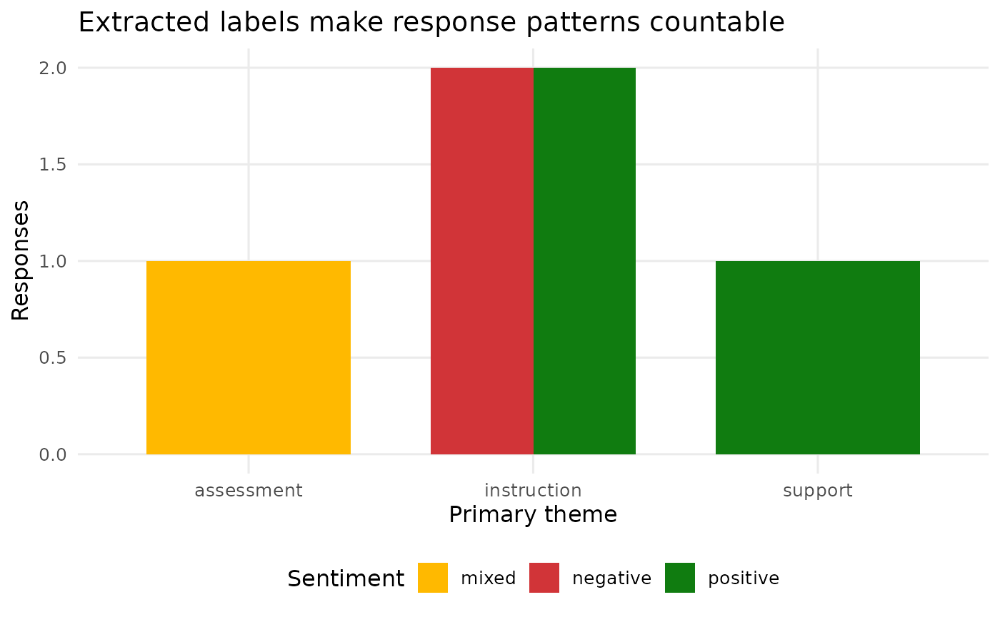

Annotating open-ended survey responses end to end
Source:vignettes/annotation-workflow.Rmd
annotation-workflow.RmdOpen-ended survey responses are valuable because respondents can say what the researcher did not anticipate. They are also expensive to code by hand. This vignette shows a foundryR workflow that keeps each model step visible in a tibble: extract structured labels, run the same prompt at scale with Batch, embed text for similarity work, and check that generated findings are grounded in the source responses.
Example data
library(foundryR)
library(dplyr)
#>
#> Attaching package: 'dplyr'
#> The following objects are masked from 'package:stats':
#>
#> filter, lag
#> The following objects are masked from 'package:base':
#>
#> intersect, setdiff, setequal, union
responses <- tibble::tibble(
respondent_id = 1:6,
response = c(
"The lectures were clear, but the weekly quizzes felt rushed.",
"I liked the examples in R. More office hours would help.",
"The project made the material practical.",
"I struggled because the instructions changed late.",
"The instructor explained regression well.",
"The course needed more examples before the final exam."
)
)Extract structured annotations
Start with a JSON Schema. Keep the schema small enough that a human reviewer can understand it.
annotation_schema <- list(
type = "object",
properties = list(
sentiment = list(type = "string", enum = c("positive", "negative", "mixed")),
primary_theme = list(
type = "string",
enum = c("instruction", "assessment", "support", "materials")
),
needs_followup = list(type = "boolean"),
short_summary = list(type = "string")
),
required = c(
"sentiment",
"primary_theme",
"needs_followup",
"short_summary"
),
additionalProperties = FALSE
)foundry_extract() uses strict JSON Schema mode by
default for supported models. The result is one row per response, with
schema fields as columns.
annotations <- foundry_extract(
responses$response,
schema = annotation_schema,
instructions = paste(
"Code each survey response for a course evaluation.",
"Use the respondent's words. Do not infer facts that are not stated."
)
)
coded <- bind_cols(responses, annotations)
coded
#> # A tibble: 6 × 14
#> respondent_id response .input_idx .input_text .response_id .status
#> <int> <chr> <int> <chr> <chr> <chr>
#> 1 1 The lectures were c… 1 The lectur… resp_0b7303… comple…
#> 2 2 I liked the example… 2 I liked th… resp_0933f6… comple…
#> 3 3 The project made th… 3 The projec… resp_064aa2… comple…
#> 4 4 I struggled because… 4 I struggle… resp_054a7d… comple…
#> 5 5 The instructor expl… 5 The instru… resp_05e2d6… comple…
#> 6 6 The course needed m… 6 The course… resp_0dfe6c… comple…
#> # ℹ 8 more variables: .output_text <chr>, .error <lgl>, .error_msg <chr>,
#> # raw_response <list>, sentiment <chr>, primary_theme <chr>,
#> # needs_followup <lgl>, short_summary <chr>Move the same job to Azure Batch
Interactive extraction is useful while designing the schema. For larger jobs, write a JSONL request file and submit it to Azure’s Batch API.
jsonl <- tempfile(fileext = ".jsonl")
foundry_batch_requests(
responses,
input = "response",
path = jsonl,
model = "gpt-5-nano",
endpoint = "/v1/responses",
body = list(
instructions = paste(
"Code each survey response using the supplied schema.",
"Return only JSON that conforms to the schema."
),
text = list(
format = list(
type = "json_schema",
name = "CourseEvaluationAnnotation",
schema = annotation_schema,
strict = TRUE
)
)
)
)
file <- foundry_file_upload(jsonl, purpose = "batch")
batch <- foundry_batch_create(file$file_id, endpoint = "/v1/responses")
foundry_batch_get(batch$batch_id)The Batch API is the right choice when the schema is stable and the job is large enough that lower cost and asynchronous execution matter more than immediate feedback.
Embed responses for clustering and near-duplicate checks
Embeddings turn text into numeric vectors. For open-ended survey data, use them to find near-duplicate answers, cluster themes that were not in the original codebook, or build semantic search over the responses.
embeddings <- foundry_embed(
responses$response,
model = "text-embedding-3-small"
)
similarity <- foundry_similarity(embeddings)
head(similarity, 10)
#> # A tibble: 10 × 3
#> text_1 text_2 similarity
#> <chr> <chr> <dbl>
#> 1 I liked the examples in R. More office hours would help. The c… 0.546
#> 2 The lectures were clear, but the weekly quizzes felt rushe… The c… 0.507
#> 3 The lectures were clear, but the weekly quizzes felt rushe… I lik… 0.436
#> 4 The instructor explained regression well. The c… 0.421
#> 5 I liked the examples in R. More office hours would help. The i… 0.416
#> 6 The lectures were clear, but the weekly quizzes felt rushe… The i… 0.390
#> 7 The lectures were clear, but the weekly quizzes felt rushe… I str… 0.373
#> 8 I struggled because the instructions changed late. The c… 0.372
#> 9 The project made the material practical. The c… 0.334
#> 10 The project made the material practical. The i… 0.298High-similarity pairs are useful audit targets. They can reveal duplicate responses, repeated complaints, or places where the schema splits similar answers into different labels.
Validate generated findings with groundedness
After coding and embedding, a researcher often writes a summary. Treat that summary as a claim and check it against the source responses.
finding <- paste(
"Students generally praised clear instruction and practical examples.",
"Several asked for more examples and more support before assessments."
)
grounding_text <- paste(responses$response, collapse = "\n")
groundedness <- foundry_groundedness(
text = finding,
grounding_sources = grounding_text,
query = "What did students say about the course?",
task = "QnA"
)
groundedness
#> # A tibble: 1 × 6
#> grounded grounded_pct ungrounded_pct ungrounded_segments ungrounded_reasons
#> <lgl> <dbl> <int> <list> <list>
#> 1 TRUE 1 0 <chr [0]> <chr [0]>
#> # ℹ 1 more variable: correction_text <chr>If grounded is FALSE, inspect
ungrounded_segments before sharing the finding. This does
not replace human review, but it gives you an auditable check inside the
same R workflow.
Review table
review <- coded |>
select(
respondent_id,
response,
sentiment,
primary_theme,
needs_followup,
short_summary
)
review
#> # A tibble: 6 × 6
#> respondent_id response sentiment primary_theme needs_followup short_summary
#> <int> <chr> <chr> <chr> <lgl> <chr>
#> 1 1 The lectur… mixed assessment TRUE The lectures…
#> 2 2 I liked th… positive support TRUE I liked the …
#> 3 3 The projec… positive instruction FALSE The project …
#> 4 4 I struggle… negative instruction TRUE I struggled …
#> 5 5 The instru… positive instruction FALSE The instruct…
#> 6 6 The course… negative instruction TRUE The course n…The rendered table and chart below summarize the live extraction results.
| Structured annotations from open-ended responses | |||||
| ID | Response | Sentiment | Theme | Follow-up | Summary |
|---|---|---|---|---|---|
| 1 | The lectures were clear, but the weekly quizzes felt rushed. | mixed | assessment | Review | The lectures were clear, but the weekly quizzes felt rushed. |
| 2 | I liked the examples in R. More office hours would help. | positive | support | Review | I liked the examples in R. More office hours would help. |
| 3 | The project made the material practical. | positive | instruction | No review | The project made the material practical. |
| 4 | I struggled because the instructions changed late. | negative | instruction | Review | I struggled because the instructions changed late. |
| 5 | The instructor explained regression well. | positive | instruction | No review | The instructor explained regression well. |
| 6 | The course needed more examples before the final exam. | negative | instruction | Review | The course needed more examples before the final exam. |

The workflow leaves a trail: raw response, extracted labels, model metadata, embedding similarity, and groundedness checks. That trail is the reason foundryR returns tibbles instead of hiding results inside client objects.